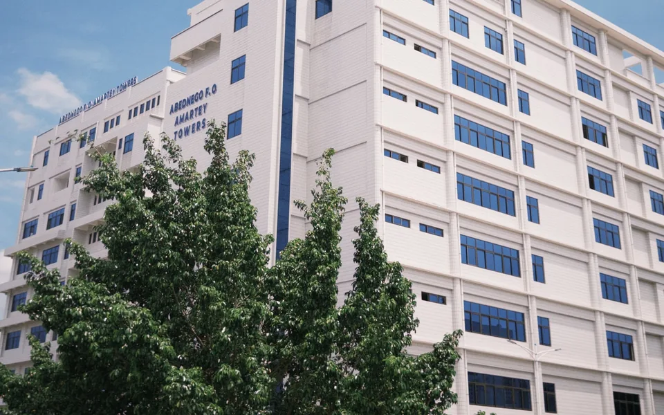

Logement du personnel du centre de santé
Logement de fonction rural avec magasin et bloc de latrines.
Voir le projet
Réalisations
Chaque fiche reprend les informations issues du document client : période, lieu, description, domaine et pièce justificative.
13 réalisations affichées
Logement de fonction rural avec magasin et bloc de latrines.
Voir le projet
École primaire de 3 salles, bureau, magasin et blocs de latrines.
Voir le projetVentilateurs et installations électriques dans 23 salles de classe.
Voir le projet
Transport de travailleurs vers le site des Mines de Mandiana.
Voir le projetBâtiment de pièce modèle réalisé pour JOBOMAX Guinée Sarl.
Voir le projet
Rénovation et entretien de bâtiments hospitaliers à Conakry.
Voir le projetEntretien, réparations matérielles et mobilières au CMC de Matam.
Voir le projet
École primaire équipée, forage et clôture semi-grillagée de 400 ml.
Voir le projet
Irrigation réhabilitée sur 50 ha avec magasin et aires de séchage.
Voir le projetBlocs sanitaires pour école primaire et centre de santé.
Voir le projetBloc administratif, magasin et abri pour groupe électrogène.
Voir le projet
Ouvrages en béton armé sur la route Kindia-Télimélé.
Voir le projetAucune réalisation n'est publiée dans ce domaine. Consultez l'ensemble des projets ou contactez notre équipe.